pacman::p_load(sf, spdep, tmap, tidyverse, knitr, GWmodel, sp)Hands-on Exercise 4
Spatial Weights and Applications
1 Overview
Every method in the rest of this course needs an answer to one question first: for a given area, which other areas count as its neighbours, and how much does each one count? A spatial weights matrix is that answer written down. Lesson 5 feeds it to Moran’s I, Lesson 6 to a constrained clustering algorithm, Lesson 7 to a local regression. Each of those inherits the weights matrix built here.
This exercise builds spatial weights for the 88 counties of Hunan province, China, and uses them to compute four spatially lagged versions of GDP per capita. It follows r4gdsa Chapter 8, the chapter assigned for Lesson 4.
Part 1 reproduces Chapter 8: contiguity weights by the Queen and Rook rules, distance weights at a fixed band and at an adaptive k, inverse distance weights, row standardisation, and the four lag variables. Part 2 examines the chapter’s method and adds the part of the lecture that Chapter 8 does not cover.
NoteSources
The hands-on exercise is r4gdsa Chapter 8: Spatial Weights and Applications.
The Lesson 4 slides close on three references. Each is used in a specific section, listed below.
| Reading | What it contributes | Used in |
|---|---|---|
| de Bellefon, Loonis and Le Gleut (2018), chapter 2 of INSEE’s Handbook of Spatial Analysis. The assigned pre-class reading, called the INSEE chapter below | The standardisation schemes beyond W and B; an explicit warning about the rule chapter 8 uses to set its distance band; why centroid distance loses information that contiguity keeps; the graph-based neighbour definitions |
4.2, 4.3, 4.4, 4.5 |
| Bavaud (1998), “Models for Spatial Weights: A Systematic Look” | The general position that no weights matrix is universally correct, and that a choice has to suit the phenomenon | 5 |
| Grubesic and Rosso (2014), “The Use of Spatially Lagged Explanatory Variables” | What a lagged variable is actually for, and a way to measure how much lagging changes the picture that can be compared against their published result | 4.7 |
The slide dates Bavaud to 2010. The paper itself states that the final version appeared in Geographical Analysis 30, pp. 153-171, in 1998, and the DOI on the slide resolves to the 1998 article. This page uses 1998.
1.1 Differences from the chapter
| The chapter | This page | Why | Where | |
|---|---|---|---|---|
| Inverse distance weights | style = "B", described as row standardised |
mismatch identified in 3.5, the two styles weighed in 4.4 | The chapter’s text and its code do not describe the same matrix, and 4.4.1 argues its code may be the better of the two | 3.5, 4.4 |
| Centroids | st_centroid on WGS 84 degrees |
same in Part 1, projected comparison in Part 2 | The shortcut leaves the fixed distance band unchanged and moves 17 of 88 counties in the k-nearest list | 4.2 |
| Cut-off distance | 62 km, from a figure computed two ways | same band, with the metric mismatch identified | knearneigh() finds the nearest neighbour in degrees and nbdists() measures it in kilometres, so the chapter’s 61.79 km is not the largest first nearest neighbour distance |
4.3 |
| Queen against Rook | link totals reported, difference not examined | the eight counties identified | The difference is four mutual pairs touching at a single corner, which is the slide 11 quiz | 4.1 |
| Geographically weighted statistics | not covered | added, using GWmodel::gwss() |
Four slides of the lecture cover it and the chapter stops before it | 4.6 |
| Standardisation styles | W and B only |
all five compared | The INSEE chapter describes four schemes citing Tiefelsdorf, and S is the one designed to even out neighbour-count heterogeneity |
4.4 |
| Neighbour definitions | contiguity, distance band, adaptive k | four graph methods added | The INSEE chapter’s argument for them is that they cannot leave a county isolated, which is the failure mode measured in 4.5 | 4.5 |
| Use of the lagged variable | four lags computed, never used | the cross-regressive use and a concordance measure | Grubesic and Rosso give both, and a published number to compare against | 4.7 |
left_join() |
join column inferred | by = "County" stated |
The inferred join works here. Naming the column means a renamed field fails loudly instead of quietly | 2.3 |
| Pipe | %>% |
|> |
Carried over from Exercise 3 | throughout |
| Figure heights | default | set per chunk | Hunan is taller than it is wide, aspect 0.889, so the default canvas leaves white bands inside every map | throughout |
| Map classification | qtm() default, equal interval |
quantile, 5 classes, on every map | GDPPC is right skewed, so equal interval puts 79 of the 88 counties in the lowest two classes and flattens the map | 3.1 |
tmap version |
v3 idiom | v4 idiom | This machine runs tmap 4.4.1 and the v3 calls emit deprecation messages | throughout |
NoteMapping of Chapter 8 sections to this page
Every section of Chapter 8 is covered.
| Chapter 8 | This page |
|---|---|
| 8.1 Overview | 1 Overview |
| 8.2 The study area and data | 2.2 The data |
| 8.2.1 Getting started | 2.1 Packages |
| 8.3.1 Import shapefile | 2.2.1 County boundaries |
| 8.3.2 Import csv | 2.2.2 Development indicators |
| 8.3.3 Performing relational join | 2.3 Joining the two |
| 8.4 Visualising regional development indicator | 3.1 Mapping GDPPC |
| 8.5.1 Computing Queen contiguity | 3.2.1 Queen contiguity |
| 8.5.2 Creating Rook contiguity | 3.2.2 Rook contiguity |
| 8.5.3 Visualising contiguity weights | 3.2.3 Connectivity graphs |
| 8.6.1 Determine the cut-off distance | 3.3.1 The cut-off distance |
| 8.6.2 Computing fixed distance weight matrix | 3.3.2 Fixed distance band |
| 8.6.3 Computing adaptive distance weight matrix | 3.3.3 Adaptive k nearest neighbours |
| 8.7 Weights based on IDW | 3.4 Inverse distance weights |
| 8.8 Row-standardised weights matrix | 3.5 Row standardisation |
| 8.9.1 Spatial lag with row-standardized weights | 3.6.1 Spatial lag |
| 8.9.2 Spatial lag as a sum of neighboring values | 3.6.2 Lag as a sum |
| 8.9.3 Spatial window average | 3.6.3 Window average |
| 8.9.4 Spatial window sum | 3.6.4 Window sum |
| 8.10 References | 6 References |
2 Getting started
2.1 Packages
spdep provides every weights function used here. GWmodel is needed only for the geographically weighted statistics in Part 2, and sp because gwss() predates sf and still takes a Spatial* object.
tmap is 4.4.1 on this machine while the chapter was written against v3, so this page uses the v4 spelling of every mapping call.
2.2 The data
Chapter 8 names both files and links neither.
| Layer | Format | Features | Native CRS | Contents |
|---|---|---|---|---|
Hunan |
ESRI shapefile | 88 polygons | WGS 84, EPSG:4326 | County boundaries of Hunan province |
Hunan_2012 |
CSV | 88 rows, 29 fields | not spatial | 2012 development indicators by county |
The shapefile has no projected CRS. It is in geographic degrees, and section 4.2 measures the effect of that on the neighbour lists.
2.2.1 County boundaries
hunan <- st_read(dsn = "data/geospatial", layer = "Hunan", quiet = TRUE)
hunanSimple feature collection with 88 features and 7 fields
Geometry type: POLYGON
Dimension: XY
Bounding box: xmin: 108.7831 ymin: 24.6342 xmax: 114.2544 ymax: 30.12812
Geodetic CRS: WGS 84
First 10 features:
NAME_2 ID_3 NAME_3 ENGTYPE_3 Shape_Leng Shape_Area County
1 Changde 21098 Anxiang County 1.869074 0.10056190 Anxiang
2 Changde 21100 Hanshou County 2.360691 0.19978745 Hanshou
3 Changde 21101 Jinshi County City 1.425620 0.05302413 Jinshi
4 Changde 21102 Li County 3.474325 0.18908121 Li
5 Changde 21103 Linli County 2.289506 0.11450357 Linli
6 Changde 21104 Shimen County 4.171918 0.37194707 Shimen
7 Changsha 21109 Liuyang County City 4.060579 0.46016789 Liuyang
8 Changsha 21110 Ningxiang County 3.323754 0.26614198 Ningxiang
9 Changsha 21111 Wangcheng County 2.292093 0.13049161 Wangcheng
10 Chenzhou 21112 Anren County 2.240739 0.13343936 Anren
geometry
1 POLYGON ((112.0625 29.75523...
2 POLYGON ((112.2288 29.11684...
3 POLYGON ((111.8927 29.6013,...
4 POLYGON ((111.3731 29.94649...
5 POLYGON ((111.6324 29.76288...
6 POLYGON ((110.8825 30.11675...
7 POLYGON ((113.9905 28.5682,...
8 POLYGON ((112.7181 28.38299...
9 POLYGON ((112.7914 28.52688...
10 POLYGON ((113.1757 26.82734...88 features, 7 fields, POLYGON geometry, WGS 84.
2.2.2 Development indicators
hunan2012 <- read_csv("data/aspatial/Hunan_2012.csv", show_col_types = FALSE)
dim(hunan2012)[1] 88 2929 fields covering wages, deposits, investment, government revenue and expenditure, GDP, population and employment. This exercise uses one of them, GDPPC, GDP per capita in yuan.
2.3 Joining the two
The join key is County, present in both. The chapter lets left_join() infer it; naming it means that a renamed field produces an error rather than a silent cross join.
hunan <- left_join(hunan, hunan2012, by = "County") |>
select(1:4, 7, 15)
names(hunan)[1] "NAME_2" "ID_3" "NAME_3" "ENGTYPE_3" "County" "GDPPC"
[7] "geometry" select(1:4, 7, 15) keeps the four name fields, County and GDPPC. It selects by position, so it depends on the column order the join happens to produce. It is correct here, verified against the printed names above.
3 Part 1: Following the chapter
3.1 Mapping GDPPC
basemap <- tm_shape(hunan) +
tm_polygons() +
tm_text("NAME_3", size = 0.35)
gdppc <- tm_shape(hunan) +
tm_polygons("GDPPC",
fill.scale = tm_scale_intervals(style = "quantile", n = 5),
fill.legend = tm_legend(title = "GDPPC (yuan)", position = c("left", "bottom")))
tmap_arrange(basemap, gdppc, ncol = 2)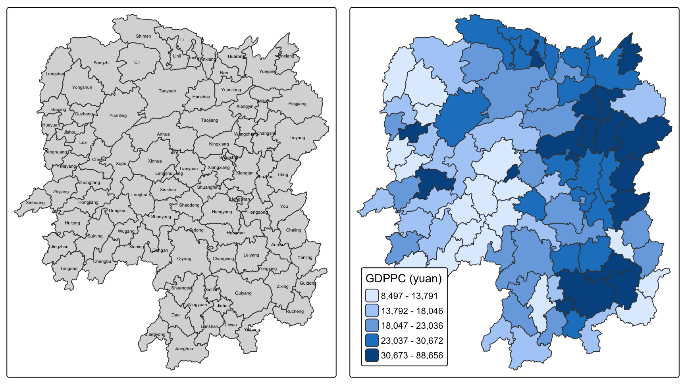
The chapter uses qtm(), whose default equal-interval classes put most counties in the lowest two, because GDPPC is right skewed. Quantile classes are used here and on every later map so the spatial pattern is visible.
The high values sit in the north east, around Changsha, and along the eastern edge. The low values run through the west.
summary(hunan$GDPPC) Min. 1st Qu. Median Mean 3rd Qu. Max.
8497 14566 20433 24405 27224 88656 3.2 Contiguity weights
poly2nb() builds a neighbours list from shared boundaries. Its queen argument chooses the rule: TRUE counts any shared point, FALSE requires a shared edge.
3.2.1 Queen contiguity
wm_q <- poly2nb(hunan, queen = TRUE)
summary(wm_q)Neighbour list object:
Number of regions: 88
Number of nonzero links: 448
Percentage nonzero weights: 5.785124
Average number of links: 5.090909
Link number distribution:
1 2 3 4 5 6 7 8 9 11
2 2 12 16 24 14 11 4 2 1
2 least connected regions:
30 65 with 1 link
1 most connected region:
85 with 11 links88 regions, 448 links, 5.09 neighbours on average. The summary also reports one county with 11 neighbours, the most, and two with only one.
The neighbours of county 1 and their GDPPC:
wm_q[[1]][1] 2 3 4 57 85hunan$County[wm_q[[1]]][1] "Hanshou" "Jinshi" "Li" "Nan" "Taoyuan"hunan$GDPPC[wm_q[[1]]][1] 20981 34592 24473 21311 228793.2.2 Rook contiguity
wm_r <- poly2nb(hunan, queen = FALSE)
summary(wm_r)Neighbour list object:
Number of regions: 88
Number of nonzero links: 440
Percentage nonzero weights: 5.681818
Average number of links: 5
Link number distribution:
1 2 3 4 5 6 7 8 9 10
2 2 12 20 21 14 11 3 2 1
2 least connected regions:
30 65 with 1 link
1 most connected region:
85 with 10 links440 links against the Queen rule’s 448. Eight fewer, which is four pairs of counties counted once from each side. Section 4.1 identifies them.
3.2.3 Connectivity graphs
Plotting a neighbours list needs a point per polygon. The chapter takes the centroid of each geometry with map_dbl().
longitude <- map_dbl(hunan$geometry, ~st_centroid(.x)[[1]])
latitude <- map_dbl(hunan$geometry, ~st_centroid(.x)[[2]])
coords <- cbind(longitude, latitude)
head(coords) longitude latitude
[1,] 112.1531 29.44362
[2,] 112.0372 28.86489
[3,] 111.8917 29.47107
[4,] 111.7031 29.74499
[5,] 111.6138 29.49258
[6,] 111.0341 29.79863These are degrees, and st_centroid treats them as if they were planar. Section 4.2 measures how far the centroids move as a result, and which neighbour lists change.
par(mfrow = c(1, 2))
plot(hunan$geometry, border = "lightgrey", main = "Queen contiguity")
plot(wm_q, coords, pch = 19, cex = 0.6, add = TRUE, col = "red")
plot(hunan$geometry, border = "lightgrey", main = "Rook contiguity")
plot(wm_r, coords, pch = 19, cex = 0.6, add = TRUE, col = "red")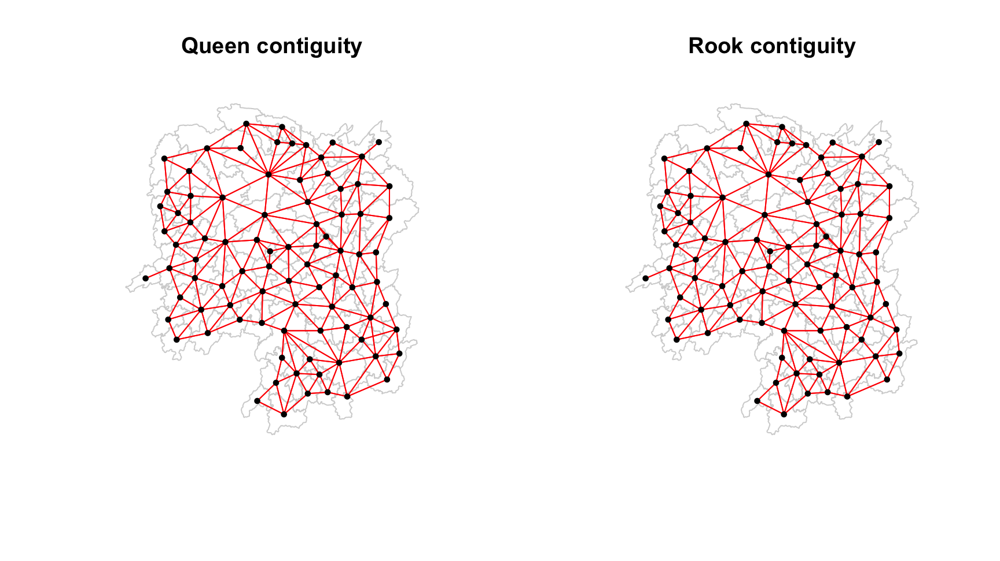
The two graphs are hard to tell apart at this scale: the difference is eight links out of 448, identified in section 4.1.
3.3 Distance weights
3.3.1 The cut-off distance
A fixed distance band needs an upper bound. If it is set too low, some counties end up with no neighbours at all. nb2listw() then stops with Empty neighbour sets found unless zero.policy = TRUE is set, and with that set the lagged value at an isolated county comes back as 0 rather than as missing. The chapter sets the bound from the largest first nearest neighbour distance, so every county keeps at least one.
k1 <- knn2nb(knearneigh(coords))
k1dists <- unlist(nbdists(k1, coords, longlat = TRUE))
summary(k1dists) Min. 1st Qu. Median Mean 3rd Qu. Max.
24.79 32.57 38.01 39.07 44.52 61.79 The chapter reads 61.79 km as the largest first nearest neighbour distance and sets the band just above it, at 62 km, so that every county keeps at least one neighbour. Section 4.3 checks both the number and the claim.
longlat = TRUE tells nbdists() the coordinates are degrees and to return great circle distances in kilometres. Without it the numbers would be degrees, which are not a distance.
3.3.2 Fixed distance band
wm_d62 <- dnearneigh(coords, 0, 62, longlat = TRUE)
wm_d62Neighbour list object:
Number of regions: 88
Number of nonzero links: 324
Percentage nonzero weights: 4.183884
Average number of links: 3.681818 324 links, 3.68 on average, against the Queen rule’s 448 and 5.09.
Quiz from the chapter: what does “Average number of links: 3.681818” mean?
Across the 88 counties, each has 3.68 neighbours within 62 km on average: 324 links divided by 88 counties. It is an average over a range from 1 to 6, not a typical value. Six counties are at the minimum of 1. card() below returns each county’s neighbour count.
table(card(wm_d62))
1 2 3 4 5 6
6 15 14 26 20 7 par(mfrow = c(1, 2))
plot(hunan$geometry, border = "lightgrey", main = "1st nearest neighbour")
plot(k1, coords, add = TRUE, col = "red", length = 0.08)
plot(hunan$geometry, border = "lightgrey", main = "Within 62 km")
plot(wm_d62, coords, add = TRUE, pch = 19, cex = 0.6)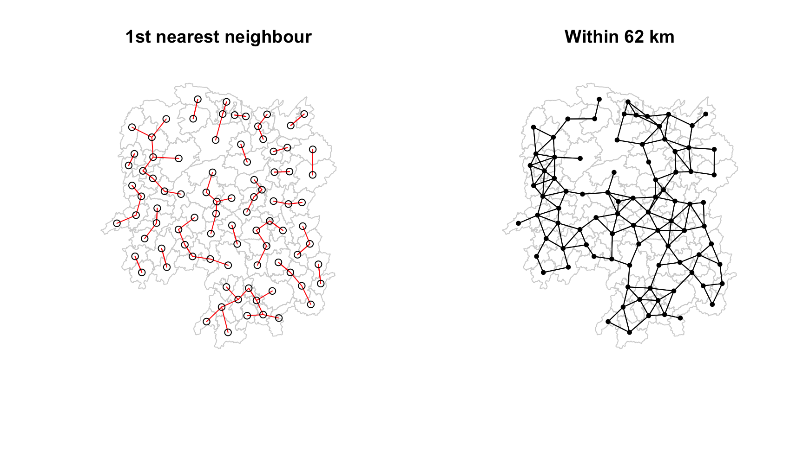
The right panel shows the characteristic problem with a fixed band: dense areas accumulate neighbours, sparse areas keep one or two.
3.3.3 Adaptive k nearest neighbours
Fixing the count instead of the distance gives every county the same number of neighbours, letting the radius vary.
knn6 <- knn2nb(knearneigh(coords, k = 6))
knn6Neighbour list object:
Number of regions: 88
Number of nonzero links: 528
Percentage nonzero weights: 6.818182
Average number of links: 6
Non-symmetric neighbours list528 links, exactly 6 each. The output reports it as non-symmetric: if B is among A’s six nearest, A need not be among B’s.
is.symmetric.nb(knn6)[1] FALSEplot(hunan$geometry, border = "lightgrey", main = "6 nearest neighbours")
plot(knn6, coords, pch = 19, cex = 0.6, add = TRUE, col = "red")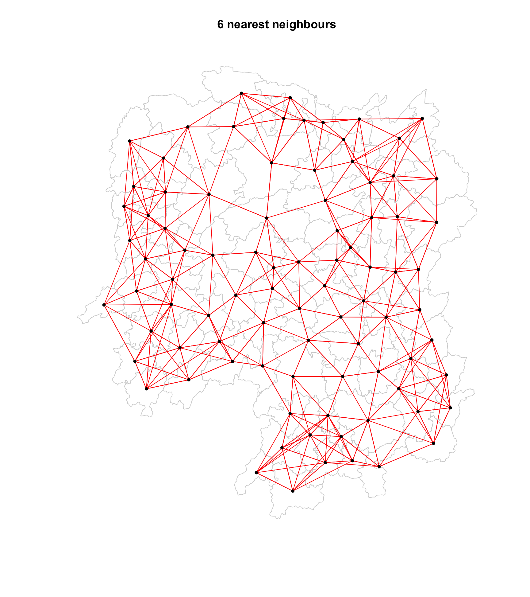
3.4 Inverse distance weights
Rather than treating every neighbour equally, weight each by the reciprocal of its distance, so that near neighbours count more.
dist <- nbdists(wm_q, coords, longlat = TRUE)
ids <- lapply(dist, function(x) 1 / (x))
ids[[1]][1] 0.01535405 0.03916350 0.01820896 0.02807922 0.01145113These are 1/km, between about 0.008 and 0.040 across the whole province.
summary(unlist(ids)) Min. 1st Qu. Median Mean 3rd Qu. Max.
0.008218 0.015088 0.018739 0.019614 0.022823 0.040338 3.5 Row standardisation
nb2listw() turns a neighbours list into a weights list. style = "W" divides each row by its number of neighbours, so the weights in every row sum to 1.
rswm_q <- nb2listw(wm_q, style = "W", zero.policy = TRUE)
rswm_qCharacteristics of weights list object:
Neighbour list object:
Number of regions: 88
Number of nonzero links: 448
Percentage nonzero weights: 5.785124
Average number of links: 5.090909
Weights style: W
Weights constants summary:
n nn S0 S1 S2
W 88 7744 88 37.86334 365.9147County 10 has eight neighbours, so each gets 0.125:
rswm_q$weights[10][[1]]
[1] 0.125 0.125 0.125 0.125 0.125 0.125 0.125 0.125The chapter then writes that it derives “a row standardised distance weight matrix” with the code below.
rswm_ids <- nb2listw(wm_q, glist = ids, style = "B", zero.policy = TRUE)
rswm_ids$weights[1][[1]]
[1] 0.01535405 0.03916350 0.01820896 0.02807922 0.01145113Those are the raw 1/distance values, unchanged from ids[[1]] above. style = "B" is the binary style, which uses glist as given. Nothing was standardised. Row standardised means the row sums to 1, and style = "W" does that:
rswm_ids_W <- nb2listw(wm_q, glist = ids, style = "W", zero.policy = TRUE)
c(B = sum(rswm_ids$weights[[1]]), W = sum(rswm_ids_W$weights[[1]])) B W
0.1122569 1.0000000 Row standardised rows sum to 1, and these do not, so the chapter’s sentence and its code do not describe the same matrix. Section 4.4 measures the gap and takes up which of the two an inverse distance weighting should use.
3.6 The four lag variables
A spatially lagged variable summarises each county’s neighbourhood into one number. Four versions follow from two binary choices: whether the weights are row standardised, and whether the county counts as its own neighbour.
| Excludes self | Includes self | |
|---|---|---|
| Row standardised | spatial lag | window average |
| Binary | lag as a sum | window sum |
3.6.1 Spatial lag
hunan$lag_GDPPC <- lag.listw(rswm_q, hunan$GDPPC)
head(hunan[, c("County", "GDPPC", "lag_GDPPC")])Simple feature collection with 6 features and 3 fields
Geometry type: POLYGON
Dimension: XY
Bounding box: xmin: 110.4922 ymin: 28.61762 xmax: 112.3013 ymax: 30.12812
Geodetic CRS: WGS 84
County GDPPC lag_GDPPC geometry
1 Anxiang 23667 24847.20 POLYGON ((112.0625 29.75523...
2 Hanshou 20981 22724.80 POLYGON ((112.2288 29.11684...
3 Jinshi 34592 24143.25 POLYGON ((111.8927 29.6013,...
4 Li 24473 27737.50 POLYGON ((111.3731 29.94649...
5 Linli 25554 27270.25 POLYGON ((111.6324 29.76288...
6 Shimen 27137 21248.80 POLYGON ((110.8825 30.11675...Anxiang’s neighbours have GDPPC 20981, 34592, 24473, 21311 and 22879. Their mean is 24847.2, which is the lagged value. With row standardised weights the spatial lag is the neighbourhood mean, and it is on the same scale as the variable itself, so the two can be mapped against each other.
tmap_arrange(
tm_shape(hunan) + tm_polygons("GDPPC",
fill.scale = tm_scale_intervals(style = "quantile", n = 5),
fill.legend = tm_legend(title = "GDPPC", position = c("left", "bottom"))),
tm_shape(hunan) + tm_polygons("lag_GDPPC",
fill.scale = tm_scale_intervals(style = "quantile", n = 5),
fill.legend = tm_legend(title = "lag GDPPC", position = c("left", "bottom"))),
ncol = 2)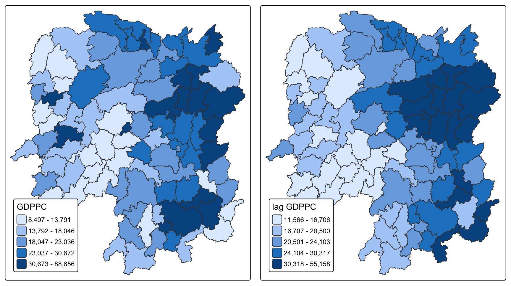
The lagged map is smoother. Isolated high counties are pulled down by poorer neighbours and the broad north-eastern cluster survives. The lag is useful for that reason: a value that survives averaging with its neighbours belongs to a regional pattern rather than to one county.
3.6.2 Lag as a sum
Binary weights, no standardisation, so the result is a total rather than a mean.
b_weights <- lapply(wm_q, function(x) 0 * x + 1)
b_weights2 <- nb2listw(wm_q, glist = b_weights, style = "B")
hunan$lag_sum_GDPPC <- lag.listw(b_weights2, hunan$GDPPC)
head(hunan[, c("County", "GDPPC", "lag_GDPPC", "lag_sum_GDPPC")])Simple feature collection with 6 features and 4 fields
Geometry type: POLYGON
Dimension: XY
Bounding box: xmin: 110.4922 ymin: 28.61762 xmax: 112.3013 ymax: 30.12812
Geodetic CRS: WGS 84
County GDPPC lag_GDPPC lag_sum_GDPPC geometry
1 Anxiang 23667 24847.20 124236 POLYGON ((112.0625 29.75523...
2 Hanshou 20981 22724.80 113624 POLYGON ((112.2288 29.11684...
3 Jinshi 34592 24143.25 96573 POLYGON ((111.8927 29.6013,...
4 Li 24473 27737.50 110950 POLYGON ((111.3731 29.94649...
5 Linli 25554 27270.25 109081 POLYGON ((111.6324 29.76288...
6 Shimen 27137 21248.80 106244 POLYGON ((110.8825 30.11675...Anxiang’s 124236 is the sum of those same five neighbours. This version confounds two things: how rich the neighbours are, and how many of them there are.
tmap_arrange(
tm_shape(hunan) + tm_polygons("GDPPC",
fill.scale = tm_scale_intervals(style = "quantile", n = 5),
fill.legend = tm_legend(title = "GDPPC", position = c("left", "bottom"))),
tm_shape(hunan) + tm_polygons("lag_sum_GDPPC",
fill.scale = tm_scale_intervals(style = "quantile", n = 5),
fill.legend = tm_legend(title = "lag sum", position = c("left", "bottom"))),
ncol = 2)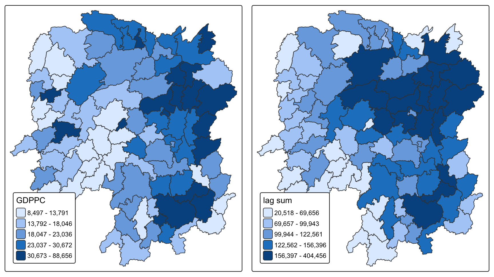
The right map is partly a map of connectivity. Taoyuan has the most neighbours of any county at 11, so its total is high because it borders many counties rather than because they are prosperous. Reading the lag sum means reading how rich the neighbours are and how many of them there are at the same time.
3.6.3 Window average
include.self() adds each county to its own neighbours list, then row standardisation over the enlarged list gives the mean of the neighbourhood including the county itself.
wm_qs <- include.self(wm_q)
wm_qsNeighbour list object:
Number of regions: 88
Number of nonzero links: 536
Percentage nonzero weights: 6.921488
Average number of links: 6.090909 536 links against 448, which is 448 plus the 88 diagonal entries.
wm_qs_lw <- nb2listw(wm_qs)
hunan$lag_window_avg_GDPPC <- lag.listw(wm_qs_lw, hunan$GDPPC)The chapter’s text at this point says “Again, we use nb2listw() and glist() to explicitly assign weight values.” No glist is passed. The call relies on the default style = "W", and that is the right setting for a window average. Only the sentence is wrong.
3.6.4 Window sum
Binary weights over the same self-inclusive list.
b_weights_s <- lapply(wm_qs, function(x) 0 * x + 1)
b_weights_s2 <- nb2listw(wm_qs, glist = b_weights_s, style = "B")
hunan$w_sum_GDPPC <- lag.listw(b_weights_s2, hunan$GDPPC)tmap_arrange(
tm_shape(hunan) + tm_polygons("lag_sum_GDPPC",
fill.scale = tm_scale_intervals(style = "quantile", n = 5),
fill.legend = tm_legend(title = "lag sum", position = c("left", "bottom"))),
tm_shape(hunan) + tm_polygons("w_sum_GDPPC",
fill.scale = tm_scale_intervals(style = "quantile", n = 5),
fill.legend = tm_legend(title = "window sum", position = c("left", "bottom"))),
ncol = 2)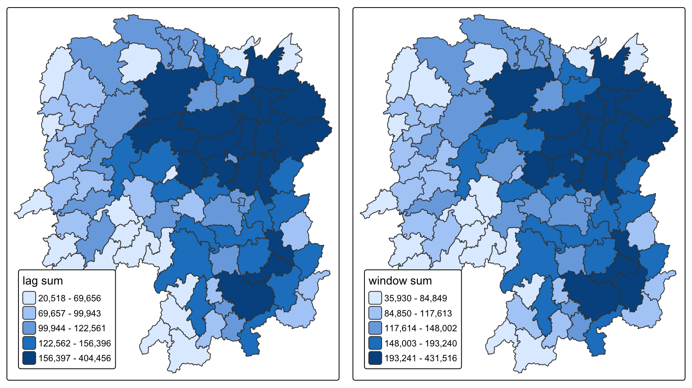
These two are hard to tell apart, and the reason is the spread between counties rather than the size of any one contribution. Totals differ enormously across Hunan because some counties border one neighbour and some border eleven, so adding one more value does not reorder them. A mean has no such spread, and including the county pulls the average toward that county’s own value. Section 3.6.5 maps the two side by side.
3.6.5 The four compared
hunan |>
st_drop_geometry() |>
select(County, GDPPC, lag_GDPPC, lag_sum_GDPPC, lag_window_avg_GDPPC, w_sum_GDPPC) |>
head(10) |>
kable(digits = 0, format.args = list(big.mark = ","))| County | GDPPC | lag_GDPPC | lag_sum_GDPPC | lag_window_avg_GDPPC | w_sum_GDPPC |
|---|---|---|---|---|---|
| Anxiang | 23,667 | 24,847 | 124,236 | 24,650 | 147,903 |
| Hanshou | 20,981 | 22,725 | 113,624 | 22,434 | 134,605 |
| Jinshi | 34,592 | 24,143 | 96,573 | 26,233 | 131,165 |
| Li | 24,473 | 27,738 | 110,950 | 27,085 | 135,423 |
| Linli | 25,554 | 27,270 | 109,081 | 26,927 | 134,635 |
| Shimen | 27,137 | 21,249 | 106,244 | 22,230 | 133,381 |
| Liuyang | 63,118 | 43,747 | 174,988 | 47,621 | 238,106 |
| Ningxiang | 62,202 | 33,583 | 235,079 | 37,160 | 297,281 |
| Wangcheng | 70,666 | 45,651 | 273,907 | 49,225 | 344,573 |
| Anren | 12,761 | 32,028 | 256,221 | 29,887 | 268,982 |
Two identities hold by construction:
all.equal(hunan$w_sum_GDPPC, hunan$lag_sum_GDPPC + hunan$GDPPC)[1] TRUEall.equal(hunan$lag_window_avg_GDPPC, hunan$w_sum_GDPPC / (card(wm_q) + 1))[1] TRUEtmap_arrange(
tm_shape(hunan) + tm_polygons("lag_GDPPC",
fill.scale = tm_scale_intervals(style = "quantile", n = 5),
fill.legend = tm_legend(title = "lag", position = c("left", "bottom"))),
tm_shape(hunan) + tm_polygons("lag_window_avg_GDPPC",
fill.scale = tm_scale_intervals(style = "quantile", n = 5),
fill.legend = tm_legend(title = "window avg", position = c("left", "bottom"))),
ncol = 2)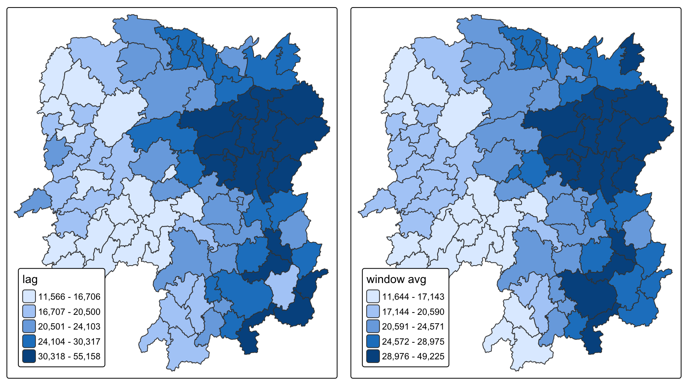
The window average differs from the lag most where a county’s own value is far from its neighbours’. The table above shows it: where the two columns diverge, the county itself is pulling against the neighbourhood around it.
4 Part 2: Review and extension
Part 1 reproduced the chapter. This part examines its method, and adds what the lecture and the readings cover that Chapter 8 does not.
The INSEE chapter divides the problem in two: which areas count as neighbours, its section 2.1, and how much each one counts, its 2.2. Its 2.2.2 reports that opinions in the field diverge on how much those choices affect results.
Chapter 8 makes a decision at four points in that scheme, and the first four sections below measure what each one changes. Which areas count as neighbours: the contiguity rule (4.1), the centroids the distances are measured between (4.2), and the distance band (4.3). How much each counts: the standardisation scheme (4.4). The sections after that are extensions beyond the chapter.
4.1 Queen and Rook contiguity
Section 3.2 built both contiguity matrices and printed the totals: 448 links under Queen, 440 under Rook. Eight links is a 1.8% difference in the structure. Which eight, and does dropping them change any county’s lagged value?
differs <- which(card(wm_q) != card(wm_r))
tibble(
county = hunan$County[differs],
queen = card(wm_q)[differs],
rook = card(wm_r)[differs],
`corner-only contact` = sapply(differs, function(i)
paste(hunan$County[setdiff(wm_q[[i]], wm_r[[i]])], collapse = ", "))
) |> kable()| county | queen | rook | corner-only contact |
|---|---|---|---|
| Anxiang | 5 | 4 | Hanshou |
| Hanshou | 5 | 4 | Anxiang |
| Anren | 8 | 7 | Zixing |
| Yongxing | 5 | 4 | Yanling |
| Zixing | 7 | 6 | Anren |
| Nan | 6 | 5 | Taoyuan |
| Yanling | 5 | 4 | Yongxing |
| Taoyuan | 11 | 10 | Nan |
Four pairs, each appearing twice because contiguity is symmetric: Anxiang with Hanshou, Anren with Zixing, Yongxing with Yanling, Nan with Taoyuan. In each case the two counties meet at a single point rather than along a boundary. This is the slide 11 quiz in the lecture deck, where the Queen row for area 1202 has seven entries and the Rook answer has five.
Whether it matters for the analysis:
lag_q <- lag.listw(nb2listw(wm_q, style = "W"), hunan$GDPPC)
lag_r <- lag.listw(nb2listw(wm_r, style = "W"), hunan$GDPPC)
moved <- which(abs(lag_q - lag_r) > 1e-9)
cat("counties whose lagged GDPPC changes:", length(moved), "of 88\n")counties whose lagged GDPPC changes: 8 of 88cat("largest change:", round(max(abs(lag_q - lag_r))), "yuan, at",
hunan$County[which.max(abs(lag_q - lag_r))], "\n")largest change: 4811 yuan, at Anren cat("as a share of that county's Rook lag:",
round(100 * max(abs(lag_q - lag_r) / lag_r), 1), "%\n")as a share of that county's Rook lag: 17.7 %Eight counties move, and the largest move is 4811 yuan at Anren, 17.7% of its value. Province wide the choice is close to irrelevant; for those eight counties it is not. The general point is that a difference of eight links out of 448 is not a difference of 1.8% in the result, because the links are not spread evenly.
Queen is the right default here. A corner contact between two Chinese counties is a real administrative adjacency, and the Rook rule discards it on what amounts to an artefact of where the boundary vertices were digitised.
4.2 Centroids: unprojected versus projected
Every distance in section 3.3 was measured between county centroids, because a distance band needs a single point to stand for each polygon. Two questions follow: whether a centroid is the right thing to measure between at all, and whether these ones were computed correctly.
The INSEE chapter takes up the first question, and its answer is no. Its Example 2.1 sets out three zones where R2 and R3 are separated in space and both touch R1, and shows that their centroids are nonetheless equidistant from each other:
Summarising the proximity between zones by the distance between the centroids results in a partial loss of the richness of the spatial relationships.
The INSEE chapter is arguing for contiguity over centroid distance on areal data, and that applies to §3.3 and §3.4 of this page. It adds that contiguity is the usual choice for demographic and social data, “in which it may be more important to be on either side of an administrative boundary than to be located at a certain distance from one another.” GDP per capita by county is that kind of data.
Chapter 8 uses centroids regardless, so the rest of this section asks whether it computes them accurately.
The chapter runs st_centroid on WGS 84 longitude and latitude. st_centroid computes a planar centroid, so on geographic coordinates it treats one degree of longitude as equal to one degree of latitude. At Hunan’s latitude of about 27 degrees, a degree of longitude is roughly 89% of a degree of latitude, so the centroids are pulled slightly. The comparison below reprojects to EPSG:4547, the CGCS2000 Gauss-Kruger zone covering Hunan, whose units are metres.
hunan_proj <- st_transform(hunan, 4547)
cent_proj <- st_centroid(st_geometry(hunan_proj))
cent_chap <- st_as_sf(data.frame(x = coords[, 1], y = coords[, 2]),
coords = c("x", "y"), crs = 4326)
shift <- as.numeric(st_distance(cent_chap, st_transform(cent_proj, 4326), by_element = TRUE))
summary(shift) Min. 1st Qu. Median Mean 3rd Qu. Max.
0.8718 9.4058 17.5424 20.6475 26.1506 62.2015 The centroids move by 18 m at the median and 62 m at most. Against a 62 km distance band that is nothing, and the fixed band is in fact unaffected:
coords_p <- st_coordinates(cent_proj)
band_chap <- dnearneigh(coords, 0, 62, longlat = TRUE)
band_proj <- dnearneigh(coords_p, 0, 62000)
identical(lapply(band_chap, sort), lapply(band_proj, sort))[1] TRUEThe k nearest neighbour list is a different matter. It has no distance threshold to absorb a small error: it takes the nearest six whatever the distances are, so a shift of tens of metres can reorder the sixth and seventh candidates.
knn6_chap <- knn2nb(knearneigh(coords, k = 6))
knn6_proj <- knn2nb(knearneigh(coords_p, k = 6))
changed <- sum(sapply(1:88, function(i)
!identical(sort(knn6_chap[[i]]), sort(knn6_proj[[i]]))))
cat("counties whose 6 nearest neighbours change:", changed, "of 88\n")counties whose 6 nearest neighbours change: 17 of 8817 of 88 counties get a different neighbour set. Following it through to the lagged variable:
lag_knn_chap <- lag.listw(nb2listw(knn6_chap, style = "W"), hunan$GDPPC)
lag_knn_proj <- lag.listw(nb2listw(knn6_proj, style = "W"), hunan$GDPPC)
d <- lag_knn_chap - lag_knn_proj
cat("largest change:", round(max(abs(d))), "yuan at", hunan$County[which.max(abs(d))], "\n")largest change: 8691 yuan at Longhui cat("as a share:", round(100 * max(abs(d / lag_knn_proj)), 1), "%\n")as a share: 41.4 %cat("Spearman correlation of the two lag vectors:",
round(cor(lag_knn_chap, lag_knn_proj, method = "spearman"), 4), "\n")Spearman correlation of the two lag vectors: 0.9844 Longhui’s neighbourhood mean moves by 8691 yuan, 41.4% of its value, because a swapped sixth neighbour was far richer than the one it replaced. The rank correlation across all 88 stays at 0.984, so the province-wide picture is intact and one county’s number is badly wrong.
So the shortcut holds for the fixed band, which is the only place the chapter uses these coordinates, and fails for the k nearest list. Projecting first takes one line, and then both results are the same whichever coordinates are used:
hunan_proj <- st_transform(hunan, 4547) # CGCS2000 Gauss-Kruger zone, metres
coords <- st_coordinates(st_centroid(st_geometry(hunan_proj)))4.3 The 62 km cut-off distance
The 62 km band in section 3.3.2 came from one number: the largest distance between any county and its nearest neighbour, 61.79 km. Setting the band there guarantees nobody is left isolated. It is a different question whether counties 62 km apart influence each other, which is the claim a distance band makes. The table below varies the band and counts the counties left with no neighbour at all.
bands <- c(45, 50, 55, 58, 59, 60, 62, 65, 70, 75, 80)
map_dfr(bands, function(d) {
w <- dnearneigh(coords, 0, d, longlat = TRUE)
tibble(`band (km)` = d, links = sum(card(w)),
`avg links` = mean(card(w)), isolated = sum(card(w) == 0))
}) |> kable(digits = 2)| band (km) | links | avg links | isolated |
|---|---|---|---|
| 45 | 128 | 1.45 | 18 |
| 50 | 192 | 2.18 | 7 |
| 55 | 246 | 2.80 | 4 |
| 58 | 272 | 3.09 | 2 |
| 59 | 298 | 3.39 | 0 |
| 60 | 310 | 3.52 | 0 |
| 62 | 324 | 3.68 | 0 |
| 65 | 358 | 4.07 | 0 |
| 70 | 440 | 5.00 | 0 |
| 75 | 506 | 5.75 | 0 |
| 80 | 568 | 6.45 | 0 |
At 58 km and below some counties have no neighbour at all. From 59 km up every county has at least one. So the threshold is 59 km, and not the 61.79 km the chapter derives. The gap between the two has a cause.
knearneigh(coords) finds each county’s nearest neighbour by planar distance on longitude and latitude. nbdists(coords, longlat = TRUE) then measures those pairs as great circle kilometres. The two steps use different metrics, so 61.79 km is the distance to the nearest county in degrees, which is not always the nearest county in kilometres.
k1_deg <- knn2nb(knearneigh(coords))
k1_km <- knn2nb(knearneigh(coords, longlat = TRUE))
tibble(
`nearest neighbour found in` = c("degrees, as the chapter does", "great circle kilometres"),
`largest such distance (km)` = c(max(unlist(nbdists(k1_deg, coords, longlat = TRUE))),
max(unlist(nbdists(k1_km, coords, longlat = TRUE))))
) |> kable(digits = 2)| nearest neighbour found in | largest such distance (km) |
|---|---|
| degrees, as the chapter does | 61.79 |
| great circle kilometres | 58.39 |
sum(sapply(seq_along(k1_deg), function(i) k1_deg[[i]] != k1_km[[i]]))[1] 6Measured consistently in kilometres the largest first nearest neighbour distance is 58.39 km, and 6 of the 88 counties have a different nearest neighbour under the two metrics. 62 km is above 58.39 km as well, so every county still keeps at least one neighbour and the chapter’s band works.
This is the same fault as §4.2, planar arithmetic on angular coordinates, and here it affects the number the chapter uses to justify its choice.
The INSEE chapter describes the same procedure and warns against using it:
This “minimum distance” method is not adapted to irregularly spaced data, as the minimum distance required for a relatively isolated point having at least one neighbour is much higher than the distance to the closest neighbour of a point located in a dense zone. There will therefore be significant disparities in the number of neighbours.
The disparity is visible in §3.3.2 above: at 62 km the neighbour counts run from 1 to 6, and six counties have only one neighbour. The band is set by the most isolated county in the province and then applied everywhere, so guaranteeing Xinhuang a neighbour gives every dense county a neighbourhood wider than its own spatial scale.
This is the argument for the adaptive k of §3.3.3, and for the graph methods in §4.5.
The lower end of the band is fixed by the isolated counties. The upper end is not fixed by anything. Going from 62 km to 80 km more than doubles the link count, from 324 to 570, and there is nothing in the GDPPC data to show which band is closer to the distance over which counties affect each other.
4.4 The C, U and S standardisation schemes
Sections 3.5 and 3.6 used two styles without comparing them: W for the lagged mean and B for the lagged sum. The style decides whether every county’s weights add up to the same total, or whether counties with more neighbours count for more.
nb2listw() offers five. The INSEE chapter describes four, citing Tiefelsdorf (1998), and the fifth is the unstandardised binary case.
styles <- c("B", "W", "C", "U", "S")
map_dfr(styles, function(st) {
lw <- nb2listw(wm_q, style = st)
rs <- sapply(lw$weights, sum)
tibble(style = st,
`min row sum` = min(rs), `max row sum` = max(rs),
`CV of row sums` = sd(rs) / mean(rs),
`all weights total` = sum(unlist(lw$weights)))
}) |> kable(digits = 4)| style | min row sum | max row sum | CV of row sums | all weights total |
|---|---|---|---|---|
| B | 1.0000 | 11.0000 | 0.3494 | 448 |
| W | 1.0000 | 1.0000 | 0.0000 | 88 |
| C | 0.1964 | 2.1607 | 0.3494 | 88 |
| U | 0.0022 | 0.0246 | 0.3494 | 1 |
| S | 0.4506 | 1.4944 | 0.1842 | 88 |
The INSEE chapter’s account of each:
| Style | What it does | Consequence |
|---|---|---|
B |
binary, no standardisation | A county’s total weight is its neighbour count, so Taoyuan with 11 neighbours exerts 11 times Xinhuang’s pull |
W |
row standardisation | Every row sums to 1. Gives more weight to border counties, which have few neighbours |
C |
global standardisation, all weights scaled so they total \(n\) | Central counties with many neighbours take more external influence than border ones |
U |
uniform, all weights total 1 | Same shape as C, different scale |
S |
variance stabilisation, Tiefelsdorf | Introduced to reduce the heterogeneity that differences in neighbour count create |
The sum of all elements is exactly \(n = 88\) for W, C and S. The INSEE chapter gives this as the reason autocorrelation statistics computed from different matrices can be compared. U totals 1 by definition and B totals 448, the link count.
The row sums of S vary less than B, C and U and more than W: a coefficient of variation of 0.184 against 0.349 and 0.000. That is the reduction in heterogeneity S was designed for.
B, C and U share a coefficient of variation of exactly 0.349 because all three are the same binary matrix under a single scalar multiplier. They differ in scale and not in shape, so any statistic invariant to scale cannot tell them apart.
Moran’s I in Lesson 5 is computed from the weights list, so W and S will not give the same answer there.
4.4.1 Which style inverse distance weights should use
The obvious fix is to change style = "B" to style = "W", matching the chapter’s sentence. The INSEE chapter argues against doing that.
Inside Chapter 8 the question never arises, because rswm_ids is built, printed, and then never used: every lag in its section 8.9 runs on plain Queen contiguity or binary weights, so the distance decay computed in 8.7 is never applied to anything.
de Bellefon, Loonis and Le Gleut set out what row standardisation means and then add a caveat directly about this case:
Each weight \(w_{ij}\) can be interpreted as the fraction of spatial influence on observation \(i\) ascribable to \(j\). In contrast, such standardisation implies a certain degree of competition between neighbours: the fewer neighbours a zone has, the greater their weight. Moreover, when weights are inversely proportional to the distance between the zones, row standardisation makes them difficult to interpret.
Row standardisation divides by a row sum that is itself a function of distance, so the result mixes two things: how far a neighbour is, and how far all the other neighbours happen to be. Every county’s weights are forced to total 1 however far away its neighbours are, so the decay is preserved between one county’s neighbours and erased between counties.
The two produce lagged variables on different scales:
lag_B <- lag.listw(rswm_ids, hunan$GDPPC)
lag_W <- lag.listw(rswm_ids_W, hunan$GDPPC)
tibble(quantity = c("GDPPC itself", "lag, style B", "lag, style W"),
min = c(min(hunan$GDPPC), min(lag_B), min(lag_W)),
max = c(max(hunan$GDPPC), max(lag_B), max(lag_W))) |>
kable(digits = 0, format.args = list(big.mark = ","))| quantity | min | max |
|---|---|---|
| GDPPC itself | 8,497 | 88,656 |
| lag, style B | 429 | 7,282 |
| lag, style W | 11,729 | 54,908 |
cor(lag_B, lag_W)[1] 0.7818471The W version stays on the scale of GDPPC. The B version is a sum of yuan-per-kilometre terms, which cannot be read as a neighbourhood income or plotted against one, and the two still correlate closely enough that a map of either looks reasonable.
So the chapter’s code may be the better choice. Which style is right depends on the use: a neighbourhood mean comparable to GDPPC, as in §3.6.1, requires W, while preserving the distance decay at its true magnitude requires B. The text names one and the code does the other, so a reader cannot tell which was intended. That is the error, whichever style is correct.
This page uses W wherever a lagged value is compared against GDPPC.
4.5 Graph-based neighbour definitions
Section 4.3 showed that a fixed band leaves counties with no neighbour below 60 km, which is why the chapter sets the band from the most isolated county in the province. The INSEE chapter covers a family of neighbour definitions where that cannot happen, built from the geometry of the point set rather than from a distance threshold: “they have the advantage that it leaves no unit without neighbours.”
All four are in spdep, and each applies a different rule. Delaunay triangulation connects points into triangles that maximise the minimum angle. The sphere of influence graph joins two counties when the circles centred on each, drawn out to its own nearest neighbour, overlap. Gabriel’s graph joins two counties when no third county falls inside the circle having them as its diameter. The relative neighbour graph joins two counties only when no third county is closer to both of them than they are to each other. Each is a subgraph of the one before it.
graphs <- list(
"Delaunay" = tri2nb(coords),
"Sphere of influence" = graph2nb(soi.graph(tri2nb(coords), coords)),
"Gabriel" = graph2nb(gabrielneigh(coords), sym = TRUE),
"Relative neighbour" = graph2nb(relativeneigh(coords), sym = TRUE),
"Queen contiguity" = wm_q,
"Fixed band, 62 km" = wm_d62,
"Adaptive, k = 6" = knn6)
map_dfr(names(graphs), function(nm) {
n <- graphs[[nm]]
tibble(method = nm, links = sum(card(n)), `avg links` = mean(card(n)),
min = min(card(n)), max = max(card(n)), isolated = sum(card(n) == 0))
}) |> kable(digits = 2)| method | links | avg links | min | max | isolated |
|---|---|---|---|---|---|
| Delaunay | 498 | 5.66 | 3 | 9 | 0 |
| Sphere of influence | 428 | 4.86 | 2 | 9 | 0 |
| Gabriel | 380 | 4.32 | 2 | 8 | 0 |
| Relative neighbour | 238 | 2.70 | 1 | 4 | 0 |
| Queen contiguity | 448 | 5.09 | 1 | 11 | 0 |
| Fixed band, 62 km | 324 | 3.68 | 1 | 6 | 0 |
| Adaptive, k = 6 | 528 | 6.00 | 6 | 6 | 0 |
None of the four graph methods isolates a county, as the INSEE chapter claims. Neither does Queen contiguity on this data, so the advantage is over the distance band rather than over contiguity, and only below 60 km does that distinction start to matter.
The graphs change the spread. Queen contiguity runs from 1 neighbour to 11; Delaunay runs from 3 to 9 and the sphere of influence from 2 to 9. Taoyuan’s 11 neighbours in §3.2.1 come from it being a large county surrounded by small ones, which the INSEE chapter names as a known property of contiguity: “a very large zone surrounded by smaller zones will have a far greater number of neighbours than its neighbouring zones.” The graph methods are built on the centroids and so do not inherit that.
The relative neighbour graph is much the sparsest at 2.70 links on average, which matches Toussaint’s design goal quoted in the INSEE chapter, that it “adapts better to data by requiring the fewest links.”
par(mfrow = c(1, 2))
plot(hunan$geometry, border = "lightgrey", main = "Delaunay")
plot(graphs$Delaunay, coords, pch = 19, cex = 0.5, add = TRUE, col = "red")
plot(hunan$geometry, border = "lightgrey", main = "Relative neighbour")
plot(graphs$`Relative neighbour`, coords, pch = 19, cex = 0.5, add = TRUE, col = "red")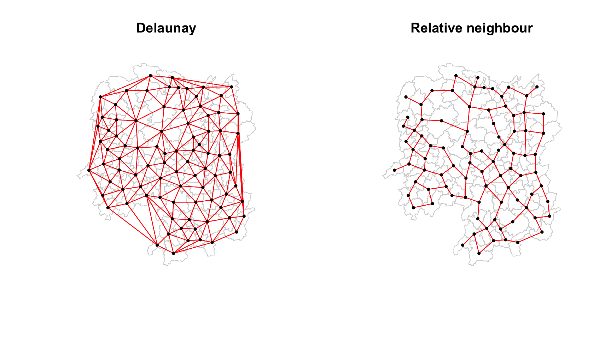
The left panel shows the artefact these methods are known for. Delaunay spans the convex hull of the point set, so counties along the provincial border are joined to each other by long edges that run outside Hunan and across counties they do not touch. The INSEE chapter does not raise this, and it is the reason the sparser subgraphs exist: the relative neighbour graph on the right keeps 238 links against Delaunay’s 498, and the long border edges are the first to go.
These are Euclidean-only in R, which the INSEE chapter flags as their limitation: great circle distance is not available, so on a province the size of Hunan they inherit the same planar assumption §4.2 measured.
4.6 Geographically weighted summary statistics
Section 3.6.3 computed a mean for each county’s neighbourhood instead of one mean for the whole province. Geographically weighted summary statistics work the same way, but the weighting and the neighbourhood are both adjustable. The window average uses uniform weights over the contiguity neighbours; gwss() lets the weights decay with distance and lets the neighbourhood be a fixed count or a fixed radius.
The last four content slides of the Lesson 4 deck cover these and their robust versions, and Chapter 8 stops before them. GWmodel::gwss() computes them, and the deck’s slide 21 table is exactly its output.
Bandwidth is set to 6 adaptive, which is the queen contiguity average of 5.09 neighbours plus the county itself, so these statistics cover about the same neighbourhood as Part 1.
hunan_sp <- as_Spatial(st_transform(hunan, 4547))
gw <- gwss(hunan_sp, vars = "GDPPC", bw = 6, kernel = "bisquare",
adaptive = TRUE, longlat = FALSE, quantile = TRUE)
names(as.data.frame(gw$SDF))[1] "GDPPC_LM" "GDPPC_LSD" "GDPPC_LVar" "GDPPC_LSKe" "GDPPC_LCV"
[6] "GDPPC_Median" "GDPPC_IQR" "GDPPC_QI" LM is the local mean, LSD the local standard deviation, LVar the variance, LSKe the skew and LCV the coefficient of variation; Median, IQR and QI are the robust three.
quantile = TRUE is required to get those last three. Without it gwss() returns only the first five and silently omits the median, IQR and quantile imbalance. There is no warning; the columns are simply absent, and code that goes on to read GDPPC_Median fails later with a message about the wrong thing.
gwr <- as.data.frame(gw$SDF)
hunan$gw_mean <- gwr$GDPPC_LM
hunan$gw_median <- gwr$GDPPC_Median
hunan$gw_iqr <- gwr$GDPPC_IQR
tibble(
statistic = c("GW mean", "GW median"),
min = c(min(hunan$gw_mean), min(hunan$gw_median)),
max = c(max(hunan$gw_mean), max(hunan$gw_median))
) |> kable(digits = 0, format.args = list(big.mark = ","))| statistic | min | max |
|---|---|---|
| GW mean | 10,312 | 73,533 |
| GW median | 8,497 | 65,706 |
The single global mean of 24405 yuan stands in for local means running from 10312 to 73533. The province has no representative county. The deck makes that argument on slide 18 for computing statistics locally.
tmap_arrange(
tm_shape(hunan) + tm_polygons("GDPPC",
fill.scale = tm_scale_intervals(style = "quantile", n = 5),
fill.legend = tm_legend(title = "GDPPC", position = c("left", "bottom"))),
tm_shape(hunan) + tm_polygons("gw_mean",
fill.scale = tm_scale_intervals(style = "quantile", n = 5),
fill.legend = tm_legend(title = "GW mean", position = c("left", "bottom"))),
tm_shape(hunan) + tm_polygons("gw_median",
fill.scale = tm_scale_intervals(style = "quantile", n = 5),
fill.legend = tm_legend(title = "GW median", position = c("left", "bottom"))),
ncol = 3)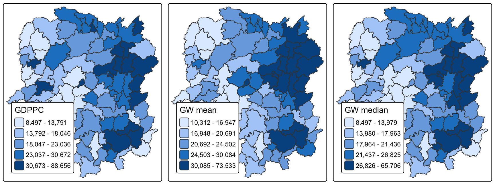
The mean and the median diverge where one neighbour is an outlier. That is the case the deck’s robust statistics slides address.
gap <- abs(hunan$gw_mean - hunan$gw_median)
cat("largest gap between GW mean and GW median:", round(max(gap)), "yuan at",
hunan$County[which.max(gap)], "\n")largest gap between GW mean and GW median: 17161 yuan at Xinshao cat(" GW mean: ", round(hunan$gw_mean[which.max(gap)]), "\n") GW mean: 28447 cat(" GW median:", round(hunan$gw_median[which.max(gap)]), "\n") GW median: 11286 At Xinshao the local mean is 28447 and the local median 11286. One rich neighbour is carrying the mean and the median ignores it. Reading the mean alone would put Xinshao’s neighbourhood in the middle of the province’s distribution when most of it is near the bottom.
4.6.1 Kernel choice and the quantile imbalance
The quantile imbalance records where the local median sits between the local quartiles. Write that position as \(t = (\text{Med} - Q_1)/(Q_3 - Q_1)\), so \(t = 0\) puts the median on the lower quartile and \(t = 1\) on the upper. The deck’s formula then reduces to \(QI = 2t - 1\): negative means the median sits nearer the lower quartile, positive nearer the upper, and zero means it is centred. It divides by the weighted IQR, so it is undefined wherever that IQR is zero.
The bisquare kernel reaches exactly zero at the bandwidth, so at bw = 6 adaptive the outermost of the six points is given a weight of 0 and only five carry any weight. With that few, the weighted first and third quartiles can land on the same observation. A Gaussian kernel never assigns a zero weight, so every neighbour contributes something.
gw_g <- gwss(hunan_sp, vars = "GDPPC", bw = 6, kernel = "gaussian",
adaptive = TRUE, longlat = FALSE, quantile = TRUE)
gwr_g <- as.data.frame(gw_g$SDF)
tibble(kernel = c("bisquare", "gaussian"),
`IQR of 0` = c(sum(gwr$GDPPC_IQR == 0), sum(gwr_g$GDPPC_IQR == 0)),
`NaN imbalance` = c(sum(is.nan(gwr$GDPPC_QI)), sum(is.nan(gwr_g$GDPPC_QI)))) |> kable()| kernel | IQR of 0 | NaN imbalance |
|---|---|---|
| bisquare | 10 | 10 |
| gaussian | 0 | 0 |
Ten counties against none. Under the Gaussian kernel the quantile imbalance runs from -0.777 to 0.632 across the province, so no county’s median sits at a quartile but several come close.
The bisquare kernel is the usual default and is the wrong default at a bandwidth this small. The failure surfaces as NaN in a column rather than as an error, the same shape as the style = "B" problem above.
4.7 Lagged explanatory variables in regression
Chapter 8 computes four lagged variables and never says what they are used for. Grubesic and Rosso are a worked case. Their definition, the one the lecture puts on slide 15, excludes the county itself from its own lag:
\[[Wx]_i = \sum_{j \neq i} w_{ij} x_j\]
Section 3.6.1 follows that definition, and the two window versions in §3.6.3 and §3.6.4 are a deliberate departure from it.
Their use for it is as an explanatory variable rather than a mapped quantity. They contrast it with the more familiar model where the dependent variable is lagged:
rather than creating a multiplier effect as with spatially lagged dependent variables, spatial cross-regressive terms can be used directly in a standard regression framework. In other words, even ordinary least squares regressions would work with these data and not bias \(\gamma\).
So a lagged explanatory variable can go straight into an ordinary regression, where a lagged dependent variable cannot. They used a queen’s contiguity matrix to build theirs. Section 4.1 settled on the same default here for a different reason.
They also give a way to say how much lagging alters the picture: cut both the variable and its lag into tertiles and measure agreement. On Philadelphia census tracts they report 44% of tracts in the same tertile, with a Cohen’s kappa of 0.2.
The same measurement on Hunan:
tertile <- function(x) cut(x, breaks = quantile(x, c(0, 1/3, 2/3, 1)),
include.lowest = TRUE, labels = c("low", "mid", "high"))
t_own <- tertile(hunan$GDPPC)
t_lag <- tertile(hunan$lag_GDPPC)
tab <- table(own = t_own, lagged = t_lag)
tab lagged
own low mid high
low 17 9 4
mid 9 14 6
high 4 6 19po <- sum(diag(tab)) / sum(tab)
pe <- sum(rowSums(tab) * colSums(tab)) / sum(tab)^2
tibble(study = c("Hunan GDPPC, this page", "Philadelphia amenity diversity, Grubesic and Rosso"),
`same tertile` = c(po, 0.44),
kappa = c((po - pe) / (1 - pe), 0.2)) |>
kable(digits = 3)| study | same tertile | kappa |
|---|---|---|
| Hunan GDPPC, this page | 0.568 | 0.352 |
| Philadelphia amenity diversity, Grubesic and Rosso | 0.440 | 0.200 |
A Hunan county aligns more closely with its surrounding neighbours than a Philadelphia tract does: 56.8% fall in the same tertile as their neighbourhood, against 44%. Cohen’s kappa, which discounts the agreement that would arise by chance alone, is 0.35 against 0.2. Neither is high. Even here, 43% of counties fall in a different tertile from the neighbourhood around them, and Lesson 5 identifies those as spatial outliers.
The paper connects its own figure to its result. In their models the lagged variable was not significant, every interaction term came back above p = 0.2, and the fit did not improve. They give their own concordance of 0.2 as part of the reason, and set one alternative beside it: “measures at the participant’s own census tract are sufficient to capture relevant neighbourhood characteristics.”
4.8 The lag scatter and Moran’s I
The spatial lag from section 3.6.1 is one step away from Lesson 5. Plotting each county’s GDPPC against its neighbourhood mean gives the scatter that Moran’s I summarises.
ggplot(hunan, aes(x = GDPPC, y = lag_GDPPC)) +
geom_point(alpha = 0.7) +
geom_smooth(method = "lm", se = FALSE, colour = "firebrick") +
geom_vline(xintercept = mean(hunan$GDPPC), linetype = "dashed", colour = "grey50") +
geom_hline(yintercept = mean(hunan$lag_GDPPC), linetype = "dashed", colour = "grey50") +
labs(x = "GDPPC (yuan)", y = "Spatially lagged GDPPC (yuan)",
title = "County GDPPC against its neighbourhood mean",
subtitle = "Queen contiguity, row standardised weights") +
theme_minimal()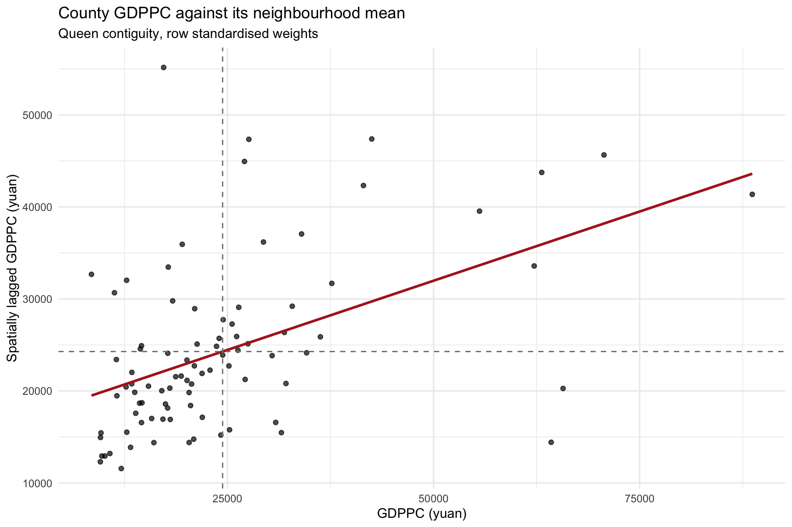
cor(hunan$GDPPC, hunan$lag_GDPPC)[1] 0.4846051The upward slope means prosperous counties tend to sit beside prosperous counties, with a Pearson correlation of 0.485.
The dashed lines mark the two means and split the counties into four groups: prosperous beside prosperous (top right), poor beside poor (bottom left), and the two mismatched groups off the diagonal. Lesson 5 names these four and tests which memberships are stronger than chance.
Every value on the vertical axis depends on the weights matrix built in Part 1.
5 Reflection
Whether the weights matrix matters is an open question in the readings themselves.
The INSEE chapter quotes both positions. Bhattacharjee and Jensen-Butler found that results vary considerably depending on how the weights are defined, and Harris, Moffat and Kravtsova argue that a researcher picks a weights structure and then has no way of checking whether it was the right one. LeSage and Pace disagree, calling that worry “the biggest myth in spatial econometrics” and putting it down to misreading the model’s coefficients.
My own results support both, depending on whether the claim is about the province or about one county.
Across the province, LeSage and Pace look right. Queen and Rook contiguity give different lagged values for only 8 counties out of 88. Computing centroids in degrees rather than metres moves them 18 m at the median, which the 62 km band absorbs completely. The k nearest neighbour lists are disturbed by that shift, and still rank the counties almost identically, at a rank correlation of 0.984. The north east is prosperous and the west is not, under every weights choice tested here.
County by county, the critics look right. Longhui’s neighbourhood mean moves 41.4% on that same centroid shift, because a k nearest list has no distance threshold to absorb a small error. Anren moves 17.7% when one corner contact is dropped. And style = "B" returns a figure in yuan per kilometre, which cannot be read as a neighbourhood income at all, yet it still correlates 0.78 with the correct version, so a map of it looks fine. A claim about one county is a claim about the weights matrix as much as about the data, the same way Exercise 2 found that a claim about one hotspot was a claim about the bandwidth.
Bavaud puts the general case: “there is no such thing as ‘true’, ‘universal’ spatial weights, optimal in all situations: good candidates must reflect the properties of the particular phenomenon.” So the weights have to be named and the alternatives shown.
One of my own conclusions changed while reading. I had written that the style = "B" problem was a one-character fix. The INSEE chapter argues that row standardising inverse distance weights makes them hard to interpret, which means the chapter’s code may be the better choice and only its sentence wrong.
The recurring hazard in this exercise was software that fails quietly. Four calls ran with no error and no warning while doing something other than what the text around them described: style = "B" returning yuan per kilometre where a neighbourhood mean was described, gwss() dropping the median, IQR and quantile imbalance because quantile = TRUE was left out, the bisquare kernel producing ten NaN values, and knearneigh() finding each county’s nearest neighbour in degrees while nbdists() measured it in kilometres, so 61.79 km was not the largest first nearest neighbour distance.
With more time I would test the bandwidth in section 4.6 instead of choosing it. Setting it to 6 matches the average number of contiguity neighbours, which is a reason but not a test. GWmodel has no automatic selector for gwss(), so the alternative is a sensitivity table across several bandwidths, like the one in section 4.3.
This page does not test whether Hunan’s spatial pattern is stronger than chance would produce. The scatter in section 4.8 slopes upwards, and Moran’s I in Lesson 5 decides whether that slope means anything.
6 References
Course materials:
- Kam, T.S. (2026), Lesson 4: Spatial Weights and Applications, ISSS626 Geospatial Analytics and Applications, SMU.
- Kam, T.S. (2026), Chapter 8: Spatial Weights and Applications, R for Geospatial Data Science and Analytics.
Method:
The three named on the Lesson 4 slides, all read in full:
- de Bellefon, M.-P., Loonis, V. and Le Gleut, R. (2018), “Codifying the neighbourhood structure”, chapter 2 of Handbook of Spatial Analysis: Theory and Application with R, INSEE. The assigned pre-class reading.
- Bavaud, F. (1998), “Models for Spatial Weights: A Systematic Look”, Geographical Analysis, 30(2), 153-171. The slide dates this 2010; the paper and the DOI both give 1998.
- Grubesic, T.H. and Rosso, A.L. (2014), “The Use of Spatially Lagged Explanatory Variables for Modeling Neighborhood Amenities and Mobility in Older Adults”, Cityscape, 16(2), 205-214.
Cited within those, and used in sections 4.4, 4.5 and 5:
- Tiefelsdorf, M. (1998), Modelling spatial processes: the identification and analysis of spatial relationships in regression residuals by means of Moran’s I, PhD thesis. The source of the
Svariance-stabilising scheme. - Bhattacharjee, A. and Jensen-Butler, C. (2005), “Estimation of spatial weights matrix in a spatial error model”, CRIEFF Discussion Papers.
- Harris, R., Moffat, J. and Kravtsova, V. (2011), “In search of ‘W’”, Spatial Economic Analysis, 6(3), 249-270.
- LeSage, J.P. and Pace, R.K. (2010), “The biggest myth in spatial econometrics”, SSRN 1725503.
- Toussaint, G.T. (1980), “The relative neighbourhood graph of a finite planar set”, Pattern Recognition, 12(4), 261-268.
- Anselin, L. (2002), “Under the hood: issues in the specification and interpretation of spatial regression models”, Agricultural Economics, 27(3), 247-267. The source of the cross-regressive argument in 4.7.
Alternative reading named on the outline, not used here:
- Bivand, R.S., Pebesma, E. and Gómez-Rubio, V. (2013), Applied Spatial Data Analysis with R, 2nd edition, chapter 9 to section 9.3.1. Springer.
- Brunsdon, C., Fotheringham, A.S. and Charlton, M. (2002), “Geographically weighted summary statistics: a framework for localised exploratory data analysis”, Computers, Environment and Urban Systems, 26(6), 501-524. The method behind
gwss().
Packages:
- Bivand, R.S. and Wong, D.W.S. (2018), “Comparing implementations of global and local indicators of spatial association”, TEST, 27(3), 716-748. The
spdepreference. - Gollini, I., Lu, B., Charlton, M., Brunsdon, C. and Harris, P. (2015), “GWmodel: An R Package for Exploring Spatial Heterogeneity Using Geographically Weighted Models”, Journal of Statistical Software, 63(17).
Data:
- Hunan county boundary layer and
Hunan_2012.csv, the two files named in Chapter 8.
7 About this document
Written and executed in Quarto with R 4.6.1. All figures are generated at render time from the data in data/, so nothing on this page is pasted in.
I used AI assistance while working out the approach and the extensions in Part 2. The analysis was run and checked by me.